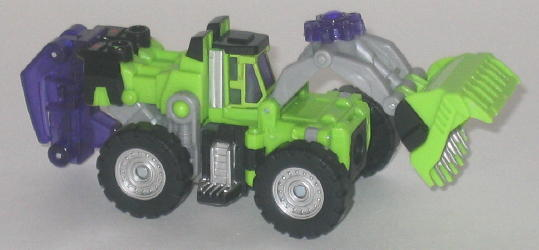 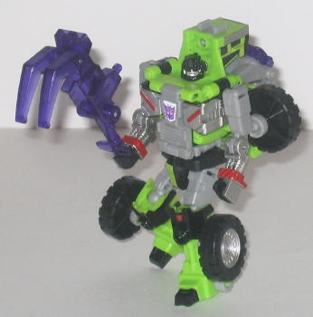
Size : Basic
Difficulty of Transformation : Medium
Color Scheme : Light green, light gray, black, and some transparent dark purple, silver, and dark red
Rating : 9.4
Allegiances
: Decepticon
Set Price
: $30 (U.S.)
Set Contains
: Bonecrusher, Decepticon
Scrapper, Hightower, Long Haul, Scavenger, and Energon stars & weapons
(NOTE: Because this is set a repaint, this
is not a full-blown review. This mainly covers any changes made to the
set and the color scheme, and merely compares it to the various Energon
Constructicon Maximus components. For a review on Sledge, the mold used
for Bonecrusher and Decepticon Scrapper, go
here
.
For a review on Duststorm, the mold used for Hightower and Long Haul, go
here
.
For a review on Steamhammer, the mold used for Scavenger, and the combined
gestalt form, go
here
.)
 Bonecrusher
Bonecrusher
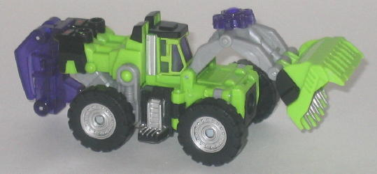
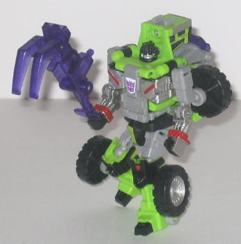
Size
: Basic
Difficulty of Transformation
: Medium
Color Scheme
: Light green, light
gray, black, and some transparent dark purple, silver, and dark red
Rating
: 9.4
Bonecrusher has a fairly
"traditional" Constructicon-ish color, what with light red and a bit of
purple. Those two colors have always gone together incredibly well, and
it's no different here on Bonecrusher. The only purple is on the transparent
windows, Energon star, and Energon weapons, though, so the pruple isn't
a major color. Instead, light gray and black have replaced where the purple
has traditionally gone on a Constructicon, with fair bit of silver paint
apps as well. Both colors go together with the overall scheme quite well,
though admittedly not quite as well as purple would have in their place.
The few minor dark red paint apps do look extremely good against the black,
however, and add a bit more "evilness" to Bonecrusher's look, especially
in robot mode. The "worn metal" silver paint app on the inside of the shovel
is also very well-done, too. It's certainly nice to see that Bonecrusher
(as well as the rest of the Classics Constructicons) aren't just straight
pallet swaps of their Energon versions, too-- he even has different paint
apps compared to the other use of the mold in the giftset, Decepticon Scrapper.
No mold changes have
been made to Classics Bonecrusher.
Classics Bonecrusher
has a nice color scheme on an already nice mold, and a very G1-ish Constructicon
scheme to boot (and G1 homages are, of course, the entire idea of Classics).
I put him on par with Energon Sledge, the better-colored of the two uses
of the mold in the Energon line, but a little below Scrapper.
 Decepticon
Scrapper
Decepticon
Scrapper
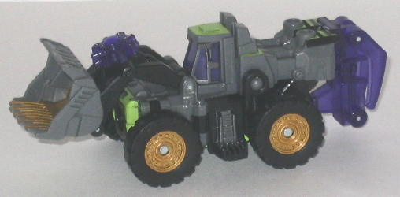
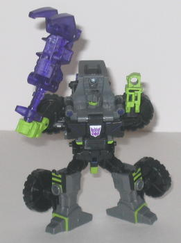
Size
: Basic
Difficulty of Transformation
: Medium
Color Scheme
: Moderately dark gray,
black, and some light chalky green, dark purple, transparent dark purple,
metallic gunmetal gray, white and dull metallic gold
Rating
: 9.6
Scrapper, with most of
his parts being either gray or black, would have admittedly been pretty
dull if not for his paint apps. But his rather unique paint apps make all
the difference, and in my opinion make him the best-looking out of the
four different paint jobs this mold has gotten. The alternating green-and-black
stripes on the knees look boss, and the other light green paint apps help
to add some very nice contrast and a bit of Constructicon-y color to the
toy too. (The purple Energon parts also defnitely help as well.) The light
green face in robot mode looks surprisingly cool, and the gold paint apps
on the centers of the wheels and the inside of the shovel look VERY nice,
too, especially the former. (It makes me wish Hightower had gold wheels,
too... ah, well.) About the only complaint I have is the paint app on the
underside of the shovel in vehicle mode, which is a alternating light green-and-white
paint pattern-- it's not too bad, and definitely looks construction-y,
but given that it's on the bottom of the shovel you really can't see it
well in either mode. A big paint app like that should have been put somewhere
more visible.
No mold changes have
been made to Classics Scrapper.
Classics Scrapper has
the best color scheme this mold has seen, with some dynamite paint apps
that really bring a lot of contrast to the toy and make it very catching
to the eye. My personal favorite of the set.
 Hightower
Hightower
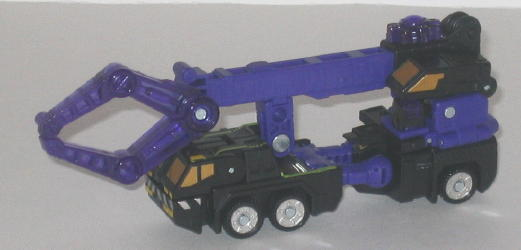
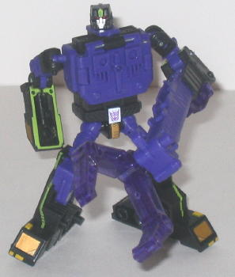
Size
: Basic
Difficulty of Transformation
: Medium
Color Scheme
: Black, royal purple,
and some dull metallic gold, silver, light chalky green, dark red, and
transparent dark purple
Rating
: 8.1
Hightower, which seems
to be the "new" name for the G1 Constructicon Hook (given that "Hook" is
far too generic to copyright these days), has a mostly black and purple
color scheme. The purple is of an especially attractive shade, being of
a "royal" tint, and goes quite well with the black, even though they're
both rather dark colors. There are some light colors to add some contrast
to the toy, though-- I especially like the light green lines on the topside
of the right robot arm and the lower robot legs. For some reason, those
couple of light lines make Hightower look all the more evil. Hightower
also has the same shade of the very nice dull gold used for his windows,
though he has the same silver wheels as Bonecrusher and Long Haul, which
I think doesn't work quite as good as the gold would have. That's a VERY
small complaint, however, as overall the colors just come together wonderfully.
I also like little touches like the dark red paint being used ONLY on the
optics-- not only does it show a bit more care went into the color selection
for the toy, but red eyes make anything look more evil.
No mold changes have
been made to Classics Hightower.
Classics Hightower is
the best paint job this mold has gotten. He fits in with the other Constructicons
without mimicking their colors exactly, and each color is used just the
right amount. Simply an awesome-looking toy.
 Long
Haul
Long
Haul
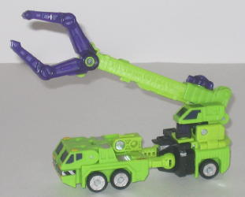
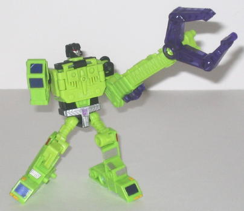
Size
: Basic
Difficulty of Transformation
: Medium
Color Scheme
: Light green, pale
light pea green, black, and some transparent dark purple, silver, very
dark metallic purple, dark red, and dull yellow
Rating
: 7.6
Although Long Haul shares
his main colors, green and black, with a previous use of this mold, Energon
Wideload, the two are easily discernable from each other. Long Haul has
considerably more green and less black, and his green is mostly a lighter,
more "Constructicon-y" color as well. He actually has two different shades
of green-- the lighter Constructicon green and a duller pea green. The
black, used mostly on the back of the main body and the waist, helps to
add a bit of dark contrast to all that light green. Still, Long Haul could
really have used more dark colors, as all that green, even if it is two
different shades, doesn't make Long Haul look as cool as the other figures
in the set. He does have plenty of paint apps, though, which is always
good-- the silver and red are very nice contrasting colors, and the metallic
purple windows, while rather funky in and of themselves, look great against
the light green.
No mold changes have
been made to Classics Long Haul.
Long Haul is probably
the worst of the set, given that he's got a (comparatively) bland color
scheme and has the worst of the three molds used for the Constructicons.
That said, he still looks good, and has more than his fair share of paint
apps, so it's actually pretty good praise for this set when you consider
that this is the weakest out of the five.
 Scavenger
Scavenger
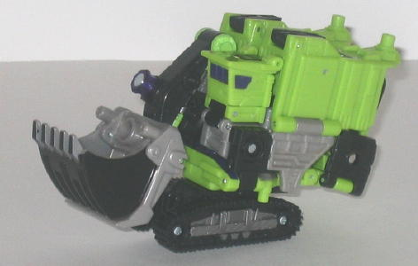
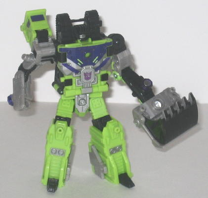
Size
: Deluxe
Difficulty of Transformation
: Medium
Color Scheme
: Light green, black,
milky gray, and some silver, dark purple, transparent dark purple, and
dark red
Rating
: 7.9
Out of all the Classics
Constructicons, Scavenger is the only one I think is too similar to his
original version, which is interesting since, unlike the others, his mold
as only been used once before as opposed to twice. His black parts are
almost entirely the same as Energon Steamhammer's, and though his light
green is a slightly different shade it's not nearly pronounced enough to
really set Scavenger apart. The purple paint design on his chest is varied
a little, with paint stripes added now instead of red bolts like on Steamhammer,
but most of his silver paint apps are the same as well. That said, it is
a pretty nice color scheme in and of itself, as everything complements
its surrounding colors very nicely. I also like the addition of gray to
the arms, as it helps give the mold a bit more color variety.
No mold changes have
been made to Classics Scavenger.
Classics Scavenger has
some nice colors when taken by itself, but it's far too similar to Steamhammer's
colors. That said, Scavenger has an overall greater variety of colors than
his predecessor, so I'd recommend him slightly over Energon Steamhammer.
 Constructicon
Devastator (Combined Form)
Constructicon
Devastator (Combined Form)
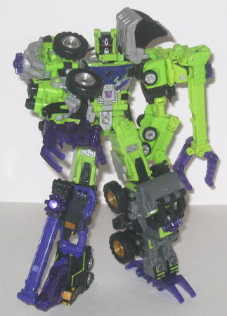
Difficulty of Transformation
: Medium
Rating
: 8.1
The combined Devastator form does, unfortunately, share some definite similarities with Constructicon Maximus due to how similar Scavenger is to Steamhammer, but the colors fit together much, much better than they did on Constructicon Maximus. On Constructicon Maximus, you had a yellow-and-brown limb and a blue limb that stuck out like sore thumbs compared to the other three components. On Devastator, all the colors complement each other very well, and were definitely chosen with this form in mind. He's not ALL green-and-purple like G1 Devastator, mind you, but he's mostly green and purple with some gray, and that's close enough to be an obvious homage while still adding in some new colors to the mix. Plus, the optics on Devastator are painted red this time around, which look better than the transparent purple plastic light piping on Constructicon Maximus that didn't work so well.
The Classics Devastator giftset is one of the best values in the Classics line-- it comes with five molds that range from rather good to fantastic (even if two are repaints of the others), all with nice color schemes and paint apps, it's a nice homage to G1 Devastator, you get $38 worth of toys for $30, and you get them all in one set without having to bother hunting them each down individually. If you don't have Energon's Constructicon Maximus, I'd highly recommend this set. And even if you do, I'd still consider it. (And the green looks better in person than it does under the light of my camera, I promise.)
Review by Beastbot